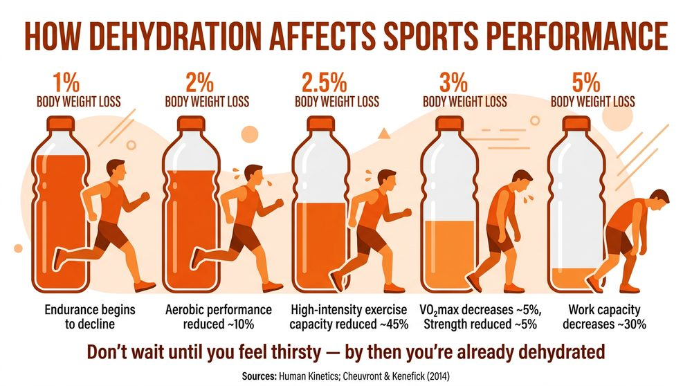

Sudden Cardiac Arrest (SCA)
Sudden cardiac arrest (SCA) is a medical emergency in which the heart suddenly stops beating. Unlike a heart attack — where blood flow to the heart is blocked — in SCA the heart’s electrical system malfunctions and the heart stops pumping blood entirely. Without immediate treatment, it is fatal within minutes.
One of the most high-profile examples in sport is Christian Eriksen, who collapsed on the pitch during Denmark’s Euro 2021 match against Finland. Eriksen suffered a sudden cardiac arrest live on television. His life was saved because teammates and medical staff began CPR immediately and a defibrillator was used within minutes. This case showed the world why rapid response and accessible defibrillators are essential in sport.
Causes of SCA
- Underlying genetic heart condition — this is the most common cause in young athletes. Many people are unaware they have a heart condition until an episode occurs.
- Intense physical activity — vigorous exercise can trigger SCA in someone with an undiagnosed heart problem.
- Sudden trauma to the chest — a condition called commotio cordis, where a direct blow to the chest at the wrong moment in the heartbeat cycle disrupts the heart’s rhythm. This can happen in sports like cricket, hockey or baseball.
Symptoms of SCA
- Sudden collapse and loss of consciousness
- No breathing, or abnormal gasping breaths
- No pulse
Treatment of SCA
- Call 999 immediately — every second counts.
- Begin CPR — chest compressions keep blood flowing to the brain and vital organs until the heart can be restarted.
- Use an AED (defibrillator) as soon as possible — the AED delivers an electric shock that can restore the heart’s normal rhythm.
The CRY (Cardiac Risk in the Young) screening programme offers heart screenings for young people aged 14–35. These screenings can detect hidden heart conditions before they cause a cardiac arrest, potentially saving lives.
For every minute without CPR and defibrillation, the chance of surviving a sudden cardiac arrest drops by around 10%. This is why sports venues are now required to have accessible AEDs and why first aid training is so important for coaches and officials.
During sudden cardiac arrest, the heart often enters a chaotic rhythm called ventricular fibrillation — it quivers instead of pumping properly. An AED analyses the heart’s rhythm and, if needed, delivers a controlled electric shock that stops the chaotic activity. This gives the heart a chance to reset and resume a normal rhythm. AEDs are designed to be used by anyone, even without medical training — they give clear voice instructions and will only deliver a shock if one is needed. CPR keeps blood flowing to the brain while the AED is being set up, which is why both are essential in the chain of survival.
Hypothermia
Hypothermia occurs when the body’s core temperature drops below 35°C (normal body temperature is around 37°C). The body loses heat faster than it can produce it, and vital organs begin to shut down. In sport, hypothermia is a risk during outdoor activities in cold or wet weather, such as fell running, open-water swimming, skiing or long-distance cycling.
Causes of Hypothermia
- Prolonged exposure to cold or wet conditions — being outside in low temperatures for an extended period.
- Not wearing appropriate clothing — failing to layer up or wearing wet clothing that draws heat away from the body.
- Being outside in cold weather for extended periods — particularly during sports like marathon running, hiking or open-water swimming where conditions can change quickly.
Symptoms of Hypothermia
- Shivering (an early warning sign)
- Blue lips and skin
- Slurred speech
- Tiredness and confusion
- Slow breathing
- Loss of coordination
Treatment of Hypothermia
- Seek immediate medical attention — hypothermia can be life-threatening if untreated.
- Remove wet clothing and wrap the person in blankets, making sure to cover the head.
- Move to a dry, warm location — shelter from wind and cold.
- Give a warm sugary non-alcoholic drink — this helps raise core temperature gradually.
Do NOT apply direct heat (such as a hot water bottle or heater), give a hot bath, or rub the person’s body parts. A sudden temperature change can cause dangerous irregular heartbeats. Warming must be gradual.
Heat Exhaustion
Heat exhaustion occurs when the body’s temperature rises to 38°C or above because the body cannot cool itself quickly enough. It is common during strenuous physical activity in hot or humid conditions and can be dangerous if not treated promptly.
Causes of Heat Exhaustion
- High environmental temperatures — especially when combined with high humidity, which makes it harder for sweat to evaporate and cool the body.
- Strenuous physical activity in heat — the body generates more heat during exercise, and in hot conditions it struggles to release it.
- Not enough water intake / dehydration — the body needs fluids to produce sweat, which is its main cooling mechanism.
- Spending too long in hot conditions — even without vigorous activity, prolonged exposure can overwhelm the body’s cooling system.
Symptoms of Heat Exhaustion
- Excessive sweating
- Headache and dizziness
- Feeling very thirsty
- Nausea or vomiting
- Rapid pulse and/or rapid breathing
- Pale, clammy skin
- Fatigue
Treatment of Heat Exhaustion
- Move to a cool place or shade — get the person out of direct sunlight immediately.
- Cool the skin by spraying or sponging with cool water, or using a fan. Apply cold packs to the neck, armpits and groin.
- Get the person to drink plenty of water or sports/rehydration drinks to replace lost fluids and salts.
- Stay with them — most people recover within 30 minutes with proper treatment.
- Call 999 if there is no improvement — heat exhaustion can develop into heatstroke, which is a medical emergency.
Heat exhaustion can develop into heatstroke if the person is not cooled down quickly enough. Heatstroke occurs when the body temperature rises above 40°C and the body’s cooling system fails completely. Unlike heat exhaustion, a person with heatstroke may stop sweating (the skin becomes hot and dry), become confused or lose consciousness, and may have seizures. Heatstroke is life-threatening and requires immediate emergency medical treatment. This is why it is so important to treat heat exhaustion quickly — catching it early prevents it escalating into heatstroke.
Dehydration
Dehydration occurs when more water leaves the body than is taken in. Even mild dehydration can affect physical performance and concentration, and severe dehydration can be dangerous. It is one of the most common conditions affecting sports performers.
Causes of Dehydration
- Excessive loss of bodily fluids through sweating, especially during vigorous activity in hot or humid weather.
- Lack of fluid consumption — not drinking enough water before, during or after exercise.
- Diarrhoea or vomiting — illness can cause rapid fluid loss.
- Increased urination — conditions such as diabetes can increase fluid loss through frequent urination.
Symptoms of Dehydration
- Feeling thirsty
- Fatigue and tiredness
- Dark yellow urine or infrequent urination
- Dry mouth and lips
- Dizziness
- Headache
Treatment of Dehydration
- Drink plenty of water — take small, regular sips rather than large amounts at once.
- Rehydration sachets or sports drinks — these replace lost electrolytes as well as water.
- Rest in a cool place — reduce further fluid loss through sweating.
Prevention of Dehydration
Prevention is far better than treatment. Drink water regularly before, during and after physical activity. Do not wait until you feel thirsty — by the time you feel thirst, your body is already mildly dehydrated. Sports drinks can be useful during prolonged activity as they replace salts lost through sweat.
Dehydration directly increases the risk of heat exhaustion. When the body is dehydrated, it cannot produce enough sweat to cool itself, making overheating far more likely during exercise in warm conditions.
